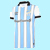
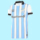

Nació entre los barrios más populares y poblados de Tucumán (Villa 9 de julio y Villa Urquiza) Pero el lugar de donde residen la mayoría de miembros de su barra brava es en barrio "El Sifón" y alrededores, además de tener una fuerte presencia y casi total en toda la extensión de la provincia. La misma fue elogiada por los distintos diarios y medios de Argentina y el exterior, como también futbolistas, y entrenadores siendo reconocida como la más popular del interior y una de las más respetadas.
Además de desbordar la capacidad de su estadio absolutamente en todos los partidos que ejerce de local; son renombradas sus convocatorias de visitante, siendo una de las hinchadas que más gente mueve hacia otras ciudades o países de la Argentina. Son recordadas sus grandes convocatorias en las ciudades de Salta, en el Estadio Padre Ernesto Martearena, por los 32avos de la Copa Argentina 2016, frente a Defensores de Belgrano; y Mendoza, a más de 1000 km, en el Estadio Malvinas Argentinas, por la final de la Copa Argentina 2017, frente a River, llevando en ambas ocasiones algo más de 15 000 personas (agotando sus entradas). Por el marco internacional, remarcan las convocatorias del Decano frente a Peñarol, de 4000 personas (también agotando sus entradas), frente a El Nacional, a más de 4500 km, de 2500 personas, como también los 3500 hinchas al Estadio Dr. Nicolás Leoz de Asunción o los 2000 al Estadio Atanasio Girardot, en Medellín donde también agotó las entradas.
En los únicos censos registrados, publicados en la TV Pública y en la Consultora Equis de Córdoba, Atlético es el más representativo y grande del Norte. Además; son renombradas sus convocatorias de visitante, siendo una de las hinchadas que más gente mueve hacia otras ciudades o países de la Argentina. Además, su hinchada ha logrado un gran reconocimiento a nivel nacional e internacional, siendo denominada, en ocasiones, la mejor del interior.

En el corazón de San Miguel de Tucumán, donde el fútbol es más que un deporte y se vive como una pasión, la hinchada de Atlético Tucumán tiene dos figuras icónicas que la han llevado a convertirse en una de las más respetadas del país: Lautaro "El Duende" Crigna y Juan "El Tuco" Medina. No son solo seguidores del equipo, sino verdaderos símbolos de unión y liderazgo dentro de las gradas.
Lautaro, conocido como "El Duende" por su voz potente y su capacidad de levantar a la hinchada con un solo grito, ha estado en la tribuna desde que tenía ocho años. Su abuelo le enseñó que el fútbol no es solo ganar o perder, sino una identidad. Con su inconfundible tambor, marca el ritmo de los cánticos que resuenan en el estadio cada partido. Su magia no está en los pies, sino en la energía que transmite. Con su bandera gigante y su inagotable entusiasmo, es el alma de la fiesta en cada partido
Por otro lado, Juan "El Tuco" Medina tiene un ritual que ya es parte del folclore de la hinchada. No importa el resultado del partido, después del último silbatazo, comienza su preparación de un tuco casero que reúne a los hinchas. En su olla se mezclan tomates, especias, anécdotas y una buena dosis de amor por el Decano. Para muchos, la verdadera celebración empieza cuando el aroma de su salsa se esparce entre los seguidores, generando una reunión que fortalece los lazos entre la hinchada.